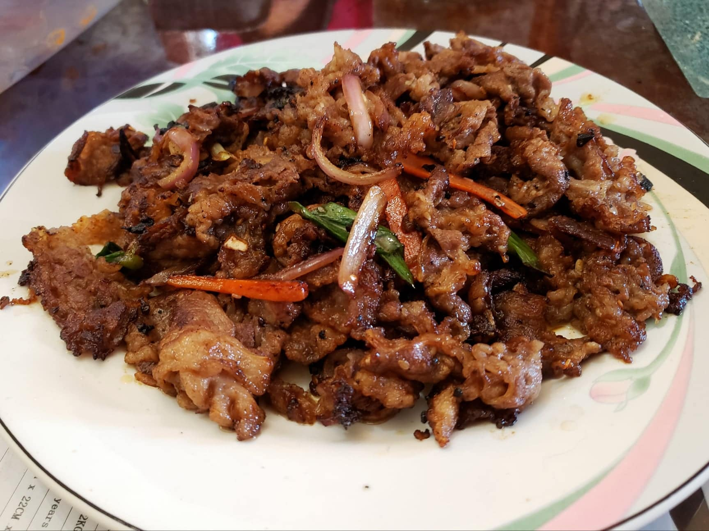

Bulgogi

Ingredients:
Marinade:
- 6 tbsp Soy sauce
- 3 tbsp Water
- 4 tbsp Sugar
- 2 tbsp Rice wine or Mirin
- 2 tbsp Garlic, minced
- 4 tbsp grated Asian pear
- 2 tbsp Sesame oil
- 2 tsp Sesame seeds
- 1/8 tsp black pepper
Other Ingredients:
- 2 lb Thinly sliced beef (rib eye or top sirloin)
- 3 Scallions, cut diagonally into 2 inch pieces
- 1 small Onion, thinly sliced
- Optional: 1 small Carrot, thinly sliced
Instructions:
- Combine and mix the marinade ingredients. Then, add the other ingredients and toss gently to combine. Let marinate overnight.
- Cook by either grilling, pan-searing, or stir-frying. If grilling or pan-searing, cook until slightly caramelized and make sure not to overcrowd. If stir-frying, it is okay to overcrowd the pan and add all the leftover marinade and let the meat cook in its juices.